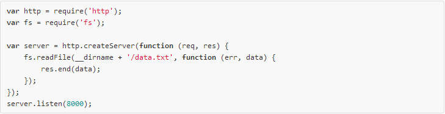
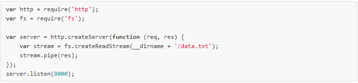
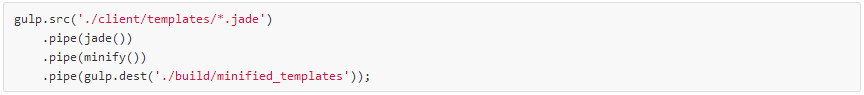
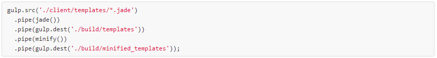
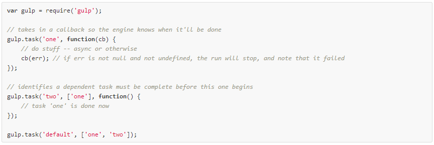
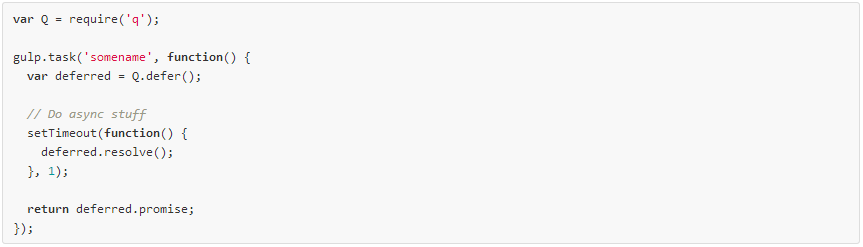
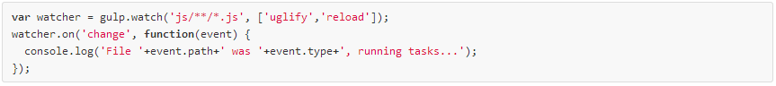

Paul Spears
paul.spears@oasisdigital.com
What is gulp.js?
- Jade and Sass Compilation
- Compressing Images
- Remove console and debugging statements
- Pre-minify Angular Apps
- Minify and Concatenate CSS and JS Files
- Run Automated Test
gulpjs.comGulp Uses Streams
Why does this matter?
src

"Takes a glob and represents a file structure. Can be piped to plugins"
dest

"Can be piped to and it will write files. Re-emits all data passed to it so you can pipe to multiple folders. Folders that don't exist will be created."task

"Define a task using Orchestrator."task cont.
Q: What can you do in a task?
A: Anything you can do in a Node application.Asynchronous execution is a Strength and Weakness of Gulp
All tasks in Gulp execute Asynchronously
As a task runner there will be dependencies
We can provide task with hintsHints come in 3 flavors
- Executing Callback
- Returning Promises
- Returning Streams
Sync Supportwatch

"Watch files and do something when a file changes. This always returns an EventEmitter that emits change events."Plugins
- gulp-jade
- gulp-minify-css
- gulp-minify-html
- gulp-sass
- gulp-ng-annotate
- gulp-uglify
- gulp-jshint
605 Plugins as of June 2014